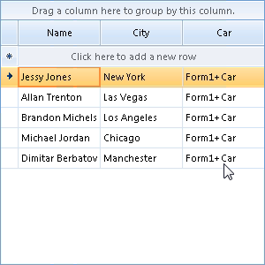
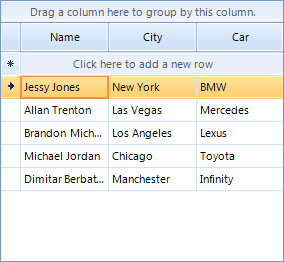

Binding to Sub Objects
RadGridView supports out-of-the-box binding to sub objects by intuitive and simple
dot (.) syntax (specified through the FieldName
property of declaratively bound columns). The example below includes a "Person" class that has three
properties, one of which is a reference type "Car":
Name - string
City - string
Car - object Car
Follows the implementation of the Person and the Car classes:
[C#] Defining the Class and Sub Class
public class Person
{
public string _name = "";
public string _city = "";
public Car _car = null;
public Person()
{
this._car = new Car();
}
public Person(string name, string city, Car car)
{
this._name = name;
this._city = city;
this._car = car;
}
public string Name
{
get
{
return this._name;
}
}
public string City
{
get
{
return this._city;
}
}
public Car Car
{
get
{
return this._car;
}
}
}
public class Car
{
string _model;
int _year;
public Car()
{
}
public Car(string model, int year)
{
this._model = model;
this._year = year;
}
public string Model
{
get
{
return this._model;
}
}
public int Year
{
get
{
return this._year;
}
}
}
[VB.NET] Defining the Class and Sub Class
Public Class Person
Public _name As String = ""
Public _city As String = ""
Public _car As Car = Nothing
Public Sub New()
Me._car = New Car()
End Sub
Public Sub New(name As String, city As String, car As Car)
Me._name = name
Me._city = city
Me._car = car
End Sub
Public ReadOnly Property Name() As String
Get
Return Me._name
End Get
End Property
Public ReadOnly Property City() As String
Get
Return Me._city
End Get
End Property
Public ReadOnly Property Car() As Car
Get
Return Me._car
End Get
End Property
End Class
Public Class Car
Private _model As String
Private _year As Integer
Public Sub New()
End Sub
Public Sub New(model As String, year As Integer)
Me._model = model
Me._year = year
End Sub
Public ReadOnly Property Model() As String
Get
Return Me._model
End Get
End Property
Public ReadOnly Property Year() As Integer
Get
Return Me._year
End Get
End Property
End Class
Lets populate a BindingList of Person with some objects and bind RadGridView.
Binding RadGridView to "Person" automatically creates three columns for all properties of the Person object.
The value properties are displayed correctly, but the reference proerty is displayed in "dot" notation
(see the third (Car) column in the screenshot below).
[C#] Binding RadGridView
BindingList<Person> list = new BindingList<Person>();
list.Add(new Person("Jessy Jones", "New York", new Car("BMW", 2011)));
list.Add(new Person("Allan Trenton", "Las Vegas", new Car("Mercedes", 2011)));
list.Add(new Person("Brandon Michels", "Los Angeles", new Car("Lexus", 2010)));
list.Add(new Person("Michael Jordan", "Chicago", new Car("Toyota", 2009)));
list.Add(new Person("Dimitar Berbatov", "Manchester", new Car("Infinity", 2008)));
radGridView1.DataSource = list;
[VB.NET] Binding RadGridView
Dim list As New BindingList(Of Person)
list.Add(New Person("Jessy Jones", "New York", New Car("BMW", 2011)))
list.Add(New Person("Allan Trenton", "Las Vegas", New Car("Mercedes", 2011)))
list.Add(New Person("Brandon Michels", "Los Angeles", New Car("Lexus", 2010)))
list.Add(New Person("Michael Jordan", "Chicago", New Car("Toyota", 2009)))
list.Add(New Person("Dimitar Berbatov", "Manchester", New Car("Infinity", 2008)))
RadGridView1.DataSource = list

Now to setup the sub-property binding of the Car column, all you have to do is to declare in the
FieldName property of the column, the name of the Car object property
that you want to bind the column to (Model or Year), using the dot notation:
[C#] Binding to Objects with Sub Objects
radGridView1.Columns[2].FieldName = "Car.Model";
[VB.NET] Binding to Objects with Sub Objects
RadGridView1.Columns(2).FieldName = "Car.Model"
The result is that the Car column is now bound to the Model property of the Car object
